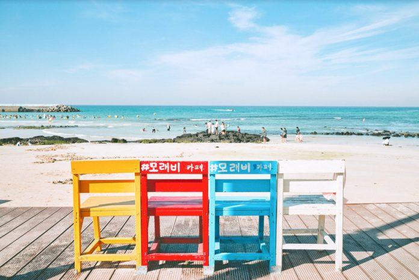

ESTJ 추천 여행지
제주도

추천 이유
ESTJ는 계획적이고 효율적인 여행을 선호하는 성향입니다. 제주도는 자연 명소와 관광 시설이 잘 정비되어 있어 동선을 체계적으로 짜기 좋으며, 다양한 볼거리와 체험을 한 번에 즐길 수 있는 여행지입니다.
추천 여행 코스
- 성산일출봉
- 섭지코지
- 아쿠아플라넷 제주
- 카멜리아힐
- 제주 올레길 산책
- 동문시장 먹거리 탐방
추천 포인트
- 계획적인 여행 일정 구성에 적합함
- 자연과 관광 명소를 모두 즐길 수 있음
- 가족·친구와 함께 방문하기 좋은 여행지
- 볼거리와 먹거리가 풍부함